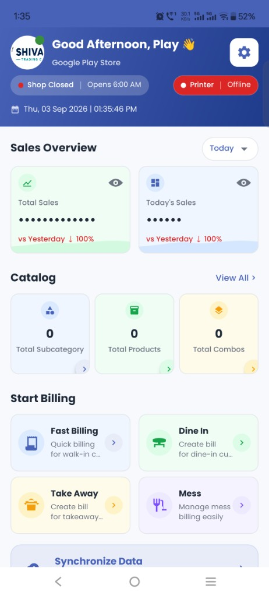

Fast billing, inventory, offline mode, Bluetooth printing and reports — all in one Android app.
Install POS Billingwala and start managing your counter from your Android phone or tablet.
Latest version available
